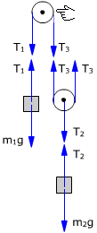
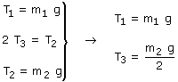

Sentido de giro de la polea fija

La polea está inicialmente en reposo porque la mano le sujeta. En cada bloque y en la polea móvil se cumple:

Al retirar la mano la polea queda sometida a las fuerzas T1 y T3 (Iguales a m1g y m2g/2 respectivamente) y girará en el sentido de la mayor
Importante
En cuanto comience el movimiento cambiarán las tensiones en los extremos de la cuerda y no valdrán las igualdades anteriores